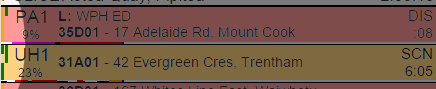

After logging in or reopening you are shown the main screen. Pending incidents are shown at the top, all vehicles are shown at the bottom. A max of 50 can be shown at any one time. The 'EAS' vehicles screen shows all single digit or prefixed '9' vehicle (eg Thorndon 1 or Thorndon 91). App loads live data once every minute, timer shown by blue bar at bottom of main screen:
The details area shows the job code & job location, the current location of the vehicle (L) and the current destination of the vehicle (D). Tap the vehicle to open the vehicle details screen:
The status area shows the status and elapsed time. On scene times (SCN) flash if they are over 5 minutes and haven't been changed to contact (CON). Destination time (DES) flash if over 20 minutes.
Tap the status area to toggle a blue flag for your personal reference if wanted.
At the top of the page are the current shift's KPIs. This can be tapped to open the KPIs page. From left to right they are:
- Total EAS job count (Urban, all colours)
- Median assign time (Urban Purples & Reds)
- Median chute time (Urban Purples & Reds)
- 8m response target (Urban Purples & Reds)
- Median hospital time (Urban, all colours)
Chute & Assign colour coding:
- = met KPI (Under 45s)
- = over KPI (46s-90s)
- = double KPI (91s-135s)
- = triple KPI (Over 135s)
Response colour coding:
- = met KPI (Over 50%)
- = over KPI (40%-50%)
- = over KPI (30%-40%)
- = over KPI (Under 30%)
Destination colour coding:
- = met KPI (Under 20m)
- = over KPI (20m-30m)
- = over KPI (30m-40m)
- = over KPI (Over 40m)
Vehicle History
Vehicle history is loaded once every 15 minutes. This is shown under the vehicle name and as an extra bar under the vehicle row. The percentage is the amount of downtime (at station or out of service) the vehicle has had this shift, including breaks. Next to percentage is the breaks indicators:
- C = Completed 30m break
- C = Completed 30m break late
- B = Broken break
- B = Broken break, started late
- ! = Overdue for a break
Late means more than 5.5h from start of break or end of last break, so does not take into account natural rest breaks.
Under most vehicles is the history bar, showing vehicle activity for the duration of the shift. Colours match jobs type, yellow indicates breaks, black indicates job of unknown colour, half height black indicates driving between stations, no bar indicates on station.
To the left of the vehicle name are the live KPI stats for the shift. The top row indicates vehicles chute performance for each Red or Purple job, the bottom row indicated the vehicles destination performance for each job (all colours). There is one bar per relevant job. Full height chute bars indicate the vehicle was on station when responded, half height chute bars indicate the vehicle was off station (ie staff probably already in the vehicle). Colour coding is same as the top KPIs bar above.

KPIs Page
You have a staff breakdown and job breakdown option for each category. Both staff and job breakdown tables are sortable by each column, tap the column title to sort. In staff breakdown, tap the staff member name to drill down and then the blue job number to drill down further. In job breakdown the table is split into two. The first table shows job specific details:
The second shows vehicle specific details:
There is one row for everytime a vehicle is assigned to a job (as opposed to one row for each job), so there will be double ups in the left column. Assign & Response times are only shown once for each job. Chute, chute variance (AVL), destination, destination variance (AVL) and top responding speed (Kmh) are shown once for each vehicle. The 'Chute' and first 'AVL' column show the chute time and the time the AVL is recorded as first moving in relation to the responding button being pressed. In this case, PORI1 was recorded as moving 49s
after the responding button was pressed. A negative AVL number means the vehicle was recorded moving
before the button was pressed.
The 'Dest' and second 'AVL' column show the time at destination and the time the vehicle was recorded as stopped moving in relation to the destination button being pressed. In this case, PORI1 was recorded as stopped 2s
after the destination button was pushed. A negative AVL means the vehicle was stopped
before the button was pressed (ie pushed destination after getting to hospital).
The 'Kmh' column shows the top recorded speed for the vehicle when responding to the job. Tap this to drill down on AVL specifics as sometimes the AVL throws wild data (eg 250kmh+).
The Chute AVL, Destination AVL and Top Speed is only available withing 15m of all vehicles clearing from the incident, but the Kmh can be pressed anytime to drill down earlier.